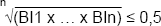

(1) Die Höhe der Asbestfaserexposition ist durch Arbeitsplatzmessungen gemäß TRGS 402 i. V. m. DIN EN 689 zu ermitteln. Diese wird durch das Messergebnis der auf eine 8stündige Arbeitsschicht bezogenen durchschnittlichen Asbestfaserkonzentration (Schichtmittelwert) beschrieben.
(2) Zur Bestimmung der Asbestfaserkonzentration ist das rasterelektronenmikroskopische Verfahren nach BGI 505-46 anzuwenden.
(3) Für die Ermittlung des Unterschreitens der Akzeptanzkonzentration von 10.000 F/m³ sind die Bewertungskriterien der DIN EN 689 zusammen mit weiteren in diesem Anhang genannten Anforderungen anzuwenden. Hiernach kann die messtechnische Feststellung der Unterschreitung von 10.000 F/m³ durch Erfüllung der in den nachfolgenden Absätzen 4 bis 10 genannten Bedingungen nachgewiesen werden.
(4) Entweder für alle Messergebnisse (ME) von mindestens 3 aufeinanderfolgenden Messungen muss
ME < ¼ x 10.000 F/ m³
sein, oder der geometrische Mittelwert der Bewertungsindices (BI) der Messergebnisse (ME) von mindestens 3 aufeinanderfolgenden Messungen (BI1 bis BIn) muss

sein. Hierbei ist BI = Messergebnis in F/m³ geteilt durch 10.000 F/m³ (Akzeptanzkonzentration). Messergebnisse mit Kleiner-Vorzeichen (<-Werte) sind ohne Kleiner-Vorzeichen in die Berechnung einzubeziehen.
(5) Kontrollmessungen sind durchzuführen, wenn sich die Gefährdungssituation wesentlich geändert hat, oder die Bewertung nach Absatz 4 anhand des geometrischen Mittelwertes erfolgt ist.
(6) Eine einmalige Messung mit einem Messergebnis ≤ 1/10 x 10.000 F/m³, wie von der DIN EN 689 ermöglicht, ist nicht ausreichend.
(7) "Aufeinanderfolgende Messungen" sind in vergleichbaren Arbeitsbereichen bei den gleichen Tätigkeiten auszuführen. Bei den Messungen sind die Randbedingungen entsprechend der TRGS 402 zu erfassen.
(8) Die Messbedingungen sind so zu wählen, dass eine möglichst niedrige Nachweisgrenze erreicht wird. Die Nachweisgrenze darf 10.000 F/m³ nicht überschreiten. Nur bei Messergebnissen oberhalb von 10.000 F/m³ ist eine höhere Nachweisgrenze zulässig.
(9) Erlauben die Messungen keine Aussage über die Unterschreitung von 10.000 F/m³, so kann die Einhaltung der Akzeptanzkonzentration nicht festgestellt werden.
(10) Solange eine der o. g. Messserien nicht abgeschlossen ist, oder sobald ein Messergebnis einer Messserie 10.000 F/m³ überschreitet, kann die Unterschreitung des Wertes von 10.000 F/m³ nicht festgestellt werden.